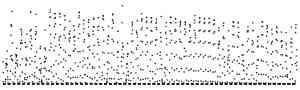

Told Where
Twenty-four makers were each given the same small picture and asked to make a work from it. Some were told what it records, some where it was recorded, some both, some nothing. Every one of them read it as sunlight. Here are their works, each with the maker's own sentence on what was measured. The ledger is closed. Look for the place name on the pages, then open the ledger and follow it into the makers' own words.

- One value every hour for 61 days, one dot each, no axes, no numbers.
- Six were told what: “It is a record of the sunlight reaching the ground: the solar radiation falling on a level surface.”
- Six were told where: “It was recorded at a station called Fort Peck, in north-eastern Montana, USA, 634 metres above sea level.”
- Six were told both.
- Six were told nothing. All three sentences are true.
The twenty-four works, each as its maker left it: m01 m02 m03 m04 m05 m06 m07 m08 m09 m10 m11 m12 m13 m14 m15 m16 m17 m18 m19 m20 m21 m22 m23 m24.
What the ledger shows
What the record is
Downwelling global solar irradiance on a level surface at the SURFRAD station Fort Peck, Montana (48.31° N, 105.10° W, 634 m), from the provider's one-minute values flagged good, as hourly means, 15 July to 13 September 2025 UTC (NOAA Global Monitoring Laboratory, gml.noaa.gov, CC0; Augustine, DeLuisi and Long 2000, doi:10.1175/1520-0477(2000)081<2341:SANSRB>2.3.CO;2). Bars show each day's total and dots show its brightest hour. On 8 August at 18 UTC the instrument read 8,566 W m⁻² after a 23-minute gap. The provider flagged that value, and it is left out here and in the picture.